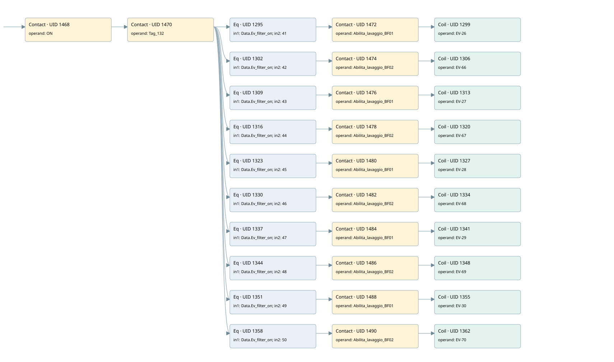

wash filter
filter · 검색 색인 순서 13 · 원본 내부 NID 추정 13
백업 PLF 원본의 2739221 바이트 위치에서 복원한 XML. 검색 문서 1894의 객체 키 161022003c11000000000000와 연결했다. 이름 해석 42/42개. 남은 RefId는 상수 또는 미해석 참조다.
연결 구조 다시 그리기
원본 Part/PCon/Wire를 이용한 연결도다. TIA 화면의 래더 배치 또는 실행 결과를 재현한 그림은 아니다. 핀 연결은 아래 표와 원본 XML을 기준으로 읽는다. 노드 위에 마우스를 두면 피연산자 이름을 볼 수 있다.

접점·코일·블록과 피연산자
| Part UID | Gate | Negated 핀 | 연결 피연산자 |
|---|---|---|---|
| 1468 | Contact | operand = ON | |
| 1470 | Contact | operand = Tag_132 | |
| 1295 | Eq | in1 = Data.Ev_filter_on; in2 = 41 | |
| 1472 | Contact | operand = Abilita_lavaggio_BF01 | |
| 1299 | Coil | operand = EV-26 | |
| 1302 | Eq | in1 = Data.Ev_filter_on; in2 = 42 | |
| 1474 | Contact | operand = Abilita_lavaggio_BF02 | |
| 1306 | Coil | operand = EV-66 | |
| 1309 | Eq | in1 = Data.Ev_filter_on; in2 = 43 | |
| 1476 | Contact | operand = Abilita_lavaggio_BF01 | |
| 1313 | Coil | operand = EV-27 | |
| 1316 | Eq | in1 = Data.Ev_filter_on; in2 = 44 | |
| 1478 | Contact | operand = Abilita_lavaggio_BF02 | |
| 1320 | Coil | operand = EV-67 | |
| 1323 | Eq | in1 = Data.Ev_filter_on; in2 = 45 | |
| 1480 | Contact | operand = Abilita_lavaggio_BF01 | |
| 1327 | Coil | operand = EV-28 | |
| 1330 | Eq | in1 = Data.Ev_filter_on; in2 = 46 | |
| 1482 | Contact | operand = Abilita_lavaggio_BF02 | |
| 1334 | Coil | operand = EV-68 | |
| 1337 | Eq | in1 = Data.Ev_filter_on; in2 = 47 | |
| 1484 | Contact | operand = Abilita_lavaggio_BF01 | |
| 1341 | Coil | operand = EV-29 | |
| 1344 | Eq | in1 = Data.Ev_filter_on; in2 = 48 | |
| 1486 | Contact | operand = Abilita_lavaggio_BF02 | |
| 1348 | Coil | operand = EV-69 | |
| 1351 | Eq | in1 = Data.Ev_filter_on; in2 = 49 | |
| 1488 | Contact | operand = Abilita_lavaggio_BF01 | |
| 1355 | Coil | operand = EV-30 | |
| 1358 | Eq | in1 = Data.Ev_filter_on; in2 = 50 | |
| 1490 | Contact | operand = Abilita_lavaggio_BF02 | |
| 1362 | Coil | operand = EV-70 |
접점 경로를 펼친 조건식
Contact·O/A·비교기의 원본 연결을 읽기 쉽게 펼친 보조 해석이다. POWER는 전원 레일 시작을 뜻한다. 호출 블록·에지·타이머의 내부 동작과 다중 쓰기 순서는 이 표로 실행 검증하지 않았다. 미해석 핀과 RefId는 원문 연결표에서 확인한다.
| UID | 동작 | 대상 | 원본 접점 경로 | 내용 |
|---|---|---|---|---|
| 1299 | Coil | EV-26 | (((ON AND Tag_132) AND [Data.Ev_filter_on = 41]) AND Abilita_lavaggio_BF01) | 조건에 따른 Coil 기록 |
| 1306 | Coil | EV-66 | (((ON AND Tag_132) AND [Data.Ev_filter_on = 42]) AND Abilita_lavaggio_BF02) | 조건에 따른 Coil 기록 |
| 1313 | Coil | EV-27 | (((ON AND Tag_132) AND [Data.Ev_filter_on = 43]) AND Abilita_lavaggio_BF01) | 조건에 따른 Coil 기록 |
| 1320 | Coil | EV-67 | (((ON AND Tag_132) AND [Data.Ev_filter_on = 44]) AND Abilita_lavaggio_BF02) | 조건에 따른 Coil 기록 |
| 1327 | Coil | EV-28 | (((ON AND Tag_132) AND [Data.Ev_filter_on = 45]) AND Abilita_lavaggio_BF01) | 조건에 따른 Coil 기록 |
| 1334 | Coil | EV-68 | (((ON AND Tag_132) AND [Data.Ev_filter_on = 46]) AND Abilita_lavaggio_BF02) | 조건에 따른 Coil 기록 |
| 1341 | Coil | EV-29 | (((ON AND Tag_132) AND [Data.Ev_filter_on = 47]) AND Abilita_lavaggio_BF01) | 조건에 따른 Coil 기록 |
| 1348 | Coil | EV-69 | (((ON AND Tag_132) AND [Data.Ev_filter_on = 48]) AND Abilita_lavaggio_BF02) | 조건에 따른 Coil 기록 |
| 1355 | Coil | EV-30 | (((ON AND Tag_132) AND [Data.Ev_filter_on = 49]) AND Abilita_lavaggio_BF01) | 조건에 따른 Coil 기록 |
| 1362 | Coil | EV-70 | (((ON AND Tag_132) AND [Data.Ev_filter_on = 50]) AND Abilita_lavaggio_BF02) | 조건에 따른 Coil 기록 |
원본 배선 연결
| Wire UID | 동일 Wire 연결 끝점 |
|---|---|
| 1492 | Powerrail {} ↔ Part 1468.in |
| 1405 | ORef 1363 (ON) ↔ Part 1468.operand |
| 1469 | Part 1468.out ↔ Part 1470.in |
| 1406 | ORef 1364 (Tag_132) ↔ Part 1470.operand |
| 1471 | Part 1470.out ↔ Part 1295.pre ↔ Part 1302.pre ↔ Part 1309.pre ↔ Part 1316.pre ↔ Part 1323.pre ↔ Part 1330.pre ↔ Part 1337.pre ↔ Part 1344.pre ↔ Part 1351.pre ↔ Part 1358.pre |
| 1407 | ORef 1365 (Data.Ev_filter_on) ↔ Part 1295.in1 |
| 1408 | ORef 1366 (41) ↔ Part 1295.in2 |
| 1409 | Part 1295.out ↔ Part 1472.in |
| 1410 | ORef 1367 (Abilita_lavaggio_BF01) ↔ Part 1472.operand |
| 1473 | Part 1472.out ↔ Part 1299.in |
| 1412 | ORef 1368 (EV-26) ↔ Part 1299.operand |
| 1413 | ORef 1369 (Data.Ev_filter_on) ↔ Part 1302.in1 |
| 1414 | ORef 1370 (42) ↔ Part 1302.in2 |
| 1415 | Part 1302.out ↔ Part 1474.in |
| 1416 | ORef 1371 (Abilita_lavaggio_BF02) ↔ Part 1474.operand |
| 1475 | Part 1474.out ↔ Part 1306.in |
| 1418 | ORef 1372 (EV-66) ↔ Part 1306.operand |
| 1419 | ORef 1373 (Data.Ev_filter_on) ↔ Part 1309.in1 |
| 1420 | ORef 1374 (43) ↔ Part 1309.in2 |
| 1421 | Part 1309.out ↔ Part 1476.in |
| 1422 | ORef 1375 (Abilita_lavaggio_BF01) ↔ Part 1476.operand |
| 1477 | Part 1476.out ↔ Part 1313.in |
| 1424 | ORef 1376 (EV-27) ↔ Part 1313.operand |
| 1425 | ORef 1377 (Data.Ev_filter_on) ↔ Part 1316.in1 |
| 1426 | ORef 1378 (44) ↔ Part 1316.in2 |
| 1427 | Part 1316.out ↔ Part 1478.in |
| 1428 | ORef 1379 (Abilita_lavaggio_BF02) ↔ Part 1478.operand |
| 1479 | Part 1478.out ↔ Part 1320.in |
| 1430 | ORef 1380 (EV-67) ↔ Part 1320.operand |
| 1431 | ORef 1381 (Data.Ev_filter_on) ↔ Part 1323.in1 |
| 1432 | ORef 1382 (45) ↔ Part 1323.in2 |
| 1433 | Part 1323.out ↔ Part 1480.in |
| 1434 | ORef 1383 (Abilita_lavaggio_BF01) ↔ Part 1480.operand |
| 1481 | Part 1480.out ↔ Part 1327.in |
| 1436 | ORef 1384 (EV-28) ↔ Part 1327.operand |
| 1437 | ORef 1385 (Data.Ev_filter_on) ↔ Part 1330.in1 |
| 1438 | ORef 1386 (46) ↔ Part 1330.in2 |
| 1439 | Part 1330.out ↔ Part 1482.in |
| 1440 | ORef 1387 (Abilita_lavaggio_BF02) ↔ Part 1482.operand |
| 1483 | Part 1482.out ↔ Part 1334.in |
| 1442 | ORef 1388 (EV-68) ↔ Part 1334.operand |
| 1443 | ORef 1389 (Data.Ev_filter_on) ↔ Part 1337.in1 |
| 1444 | ORef 1390 (47) ↔ Part 1337.in2 |
| 1445 | Part 1337.out ↔ Part 1484.in |
| 1446 | ORef 1391 (Abilita_lavaggio_BF01) ↔ Part 1484.operand |
| 1485 | Part 1484.out ↔ Part 1341.in |
| 1448 | ORef 1392 (EV-29) ↔ Part 1341.operand |
| 1449 | ORef 1393 (Data.Ev_filter_on) ↔ Part 1344.in1 |
| 1450 | ORef 1394 (48) ↔ Part 1344.in2 |
| 1451 | Part 1344.out ↔ Part 1486.in |
| 1452 | ORef 1395 (Abilita_lavaggio_BF02) ↔ Part 1486.operand |
| 1487 | Part 1486.out ↔ Part 1348.in |
| 1454 | ORef 1396 (EV-69) ↔ Part 1348.operand |
| 1455 | ORef 1397 (Data.Ev_filter_on) ↔ Part 1351.in1 |
| 1456 | ORef 1398 (49) ↔ Part 1351.in2 |
| 1457 | Part 1351.out ↔ Part 1488.in |
| 1458 | ORef 1399 (Abilita_lavaggio_BF01) ↔ Part 1488.operand |
| 1489 | Part 1488.out ↔ Part 1355.in |
| 1460 | ORef 1400 (EV-30) ↔ Part 1355.operand |
| 1461 | ORef 1401 (Data.Ev_filter_on) ↔ Part 1358.in1 |
| 1462 | ORef 1402 (50) ↔ Part 1358.in2 |
| 1463 | Part 1358.out ↔ Part 1490.in |
| 1464 | ORef 1403 (Abilita_lavaggio_BF02) ↔ Part 1490.operand |
| 1491 | Part 1490.out ↔ Part 1362.in |
| 1466 | ORef 1404 (EV-70) ↔ Part 1362.operand |
식별자 해석 근거 42개
| ORef UID | RefId | 이름 | IdentXmlPart 파일 | 해석 방법 |
|---|---|---|---|---|
| 1363 | 52 | ON | 0594-IdentXmlPart.xml | UID/RID + search-text + NID agreement |
| 1364 | 61 | Tag_132 | 0594-IdentXmlPart.xml | UID/RID + search-text + NID agreement |
| 1365 | 3 | Data.Ev_filter_on | 0596-IdentXmlPart.xml | UID/RID + search-text + NID agreement |
| 1366 | 152 | 41 | 0597-IdentXmlPart.xml | literal candidate: UID/RID/NID + nearby named declarations + search-text agreement |
| 1367 | 63 | Abilita_lavaggio_BF01 | 0598-IdentXmlPart.xml | UID/RID + search-text + NID agreement |
| 1368 | 153 | EV-26 | 0594-IdentXmlPart.xml | UID/RID + search-text + NID agreement |
| 1369 | 3 | Data.Ev_filter_on | 0596-IdentXmlPart.xml | UID/RID + search-text + NID agreement |
| 1370 | 154 | 42 | 0597-IdentXmlPart.xml | literal candidate: UID/RID/NID + nearby named declarations + search-text agreement |
| 1371 | 65 | Abilita_lavaggio_BF02 | 0598-IdentXmlPart.xml | UID/RID + search-text + NID agreement |
| 1372 | 155 | EV-66 | 0594-IdentXmlPart.xml | UID/RID + search-text + NID agreement |
| 1373 | 3 | Data.Ev_filter_on | 0596-IdentXmlPart.xml | UID/RID + search-text + NID agreement |
| 1374 | 156 | 43 | 0597-IdentXmlPart.xml | literal candidate: UID/RID/NID + nearby named declarations + search-text agreement |
| 1375 | 63 | Abilita_lavaggio_BF01 | 0598-IdentXmlPart.xml | UID/RID + search-text + NID agreement |
| 1376 | 157 | EV-27 | 0594-IdentXmlPart.xml | UID/RID + search-text + NID agreement |
| 1377 | 3 | Data.Ev_filter_on | 0596-IdentXmlPart.xml | UID/RID + search-text + NID agreement |
| 1378 | 158 | 44 | 0597-IdentXmlPart.xml | literal candidate: UID/RID/NID + nearby named declarations + search-text agreement |
| 1379 | 65 | Abilita_lavaggio_BF02 | 0598-IdentXmlPart.xml | UID/RID + search-text + NID agreement |
| 1380 | 159 | EV-67 | 0594-IdentXmlPart.xml | UID/RID + search-text + NID agreement |
| 1381 | 3 | Data.Ev_filter_on | 0596-IdentXmlPart.xml | UID/RID + search-text + NID agreement |
| 1382 | 160 | 45 | 0597-IdentXmlPart.xml | literal candidate: UID/RID/NID + nearby named declarations + search-text agreement |
| 1383 | 63 | Abilita_lavaggio_BF01 | 0598-IdentXmlPart.xml | UID/RID + search-text + NID agreement |
| 1384 | 161 | EV-28 | 0594-IdentXmlPart.xml | UID/RID + search-text + NID agreement |
| 1385 | 3 | Data.Ev_filter_on | 0596-IdentXmlPart.xml | UID/RID + search-text + NID agreement |
| 1386 | 162 | 46 | 0597-IdentXmlPart.xml | literal candidate: UID/RID/NID + nearby named declarations + search-text agreement |
| 1387 | 65 | Abilita_lavaggio_BF02 | 0598-IdentXmlPart.xml | UID/RID + search-text + NID agreement |
| 1388 | 163 | EV-68 | 0594-IdentXmlPart.xml | UID/RID + search-text + NID agreement |
| 1389 | 3 | Data.Ev_filter_on | 0596-IdentXmlPart.xml | UID/RID + search-text + NID agreement |
| 1390 | 164 | 47 | 0597-IdentXmlPart.xml | literal candidate: UID/RID/NID + nearby named declarations + search-text agreement |
| 1391 | 63 | Abilita_lavaggio_BF01 | 0598-IdentXmlPart.xml | UID/RID + search-text + NID agreement |
| 1392 | 165 | EV-29 | 0594-IdentXmlPart.xml | UID/RID + search-text + NID agreement |
| 1393 | 3 | Data.Ev_filter_on | 0596-IdentXmlPart.xml | UID/RID + search-text + NID agreement |
| 1394 | 166 | 48 | 0597-IdentXmlPart.xml | literal candidate: UID/RID/NID + nearby named declarations + search-text agreement |
| 1395 | 65 | Abilita_lavaggio_BF02 | 0598-IdentXmlPart.xml | UID/RID + search-text + NID agreement |
| 1396 | 167 | EV-69 | 0594-IdentXmlPart.xml | UID/RID + search-text + NID agreement |
| 1397 | 3 | Data.Ev_filter_on | 0596-IdentXmlPart.xml | UID/RID + search-text + NID agreement |
| 1398 | 168 | 49 | 0597-IdentXmlPart.xml | literal candidate: UID/RID/NID + nearby named declarations + search-text agreement |
| 1399 | 63 | Abilita_lavaggio_BF01 | 0598-IdentXmlPart.xml | UID/RID + search-text + NID agreement |
| 1400 | 169 | EV-30 | 0594-IdentXmlPart.xml | UID/RID + search-text + NID agreement |
| 1401 | 3 | Data.Ev_filter_on | 0596-IdentXmlPart.xml | UID/RID + search-text + NID agreement |
| 1402 | 30 | 50 | 0597-IdentXmlPart.xml | literal candidate: UID/RID/NID + nearby named declarations + search-text agreement |
| 1403 | 65 | Abilita_lavaggio_BF02 | 0598-IdentXmlPart.xml | UID/RID + search-text + NID agreement |
| 1404 | 170 | EV-70 | 0594-IdentXmlPart.xml | UID/RID + search-text + NID agreement |
검색 코드 보조 자료
참조 명칭을 찾기 위한 자료이며 실행 순서나 AND/OR 관계는 위 연결표로 확인한다.
"on" "tag_132" "data".ev_filter_on 41 #abilita_lavaggio_bf01 "ev-26" "data".ev_filter_on 42 #abilita_lavaggio_bf02 "ev-66" "data".ev_filter_on 43 #abilita_lavaggio_bf01 "ev-27" "data".ev_filter_on 44 #abilita_lavaggio_bf02 "ev-67" "data".ev_filter_on 45 #abilita_lavaggio_bf01 "ev-28" "data".ev_filter_on 46 #abilita_lavaggio_bf02 "ev-68" "data".ev_filter_on 47 #abilita_lavaggio_bf01 "ev-29" "data".ev_filter_on 48 #abilita_lavaggio_bf02 "ev-69" "data".ev_filter_on 49 #abilita_lavaggio_bf01 "ev-30" "data".ev_filter_on 50 #abilita_lavaggio_bf02 "ev-70"